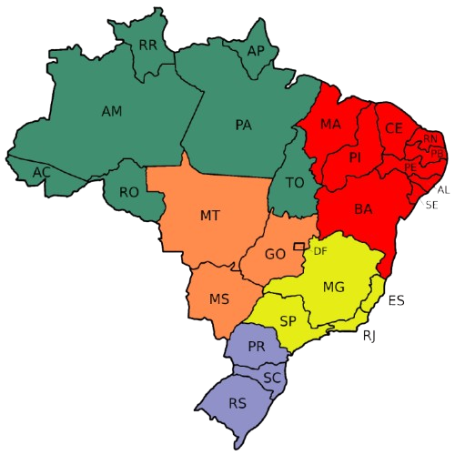

As Regiões Brasileiras


1. Região Norte
- Acre: Rio Branco
- Amapá: Macapá
- Amazonas: Manaus
- Pará: Belém
- Rondônia: Porto Velho
- Roraima: Boa Vista
- Tocantins: Palmas
2. Região Nordeste
- Maranhão: São Luís
- Piauí: Teresina
- Ceará: Fortaleza
- Rio Grande do Norte: Natal
- Paraíba: João Pessoa
- Pernambuco: Recife
- Alagoas: Maceió
- Sergipe: Aracaju
- Bahia: Salvador
3. Região Centro-Oeste
- Distrito Federal: Brasília
- Goiás: Goiânia
- Mato Grosso: Cuiabá
- Mato Grosso do Sul: Campo Grande
4. Região Sudeste
- São Paulo: São Paulo
- Minas Gerais: Belo Horizonte
- Rio de Janeiro: Rio de Janeiro
- Espírito Santo: Vitória
5. Região Sul
- Paraná: Curitiba
- Santa Catarina: Florianópolis
- Rio Grande do Sul: Porto Alegre